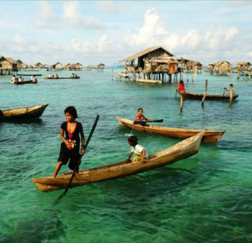
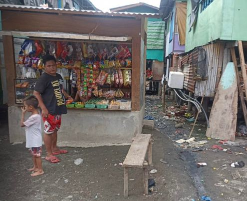
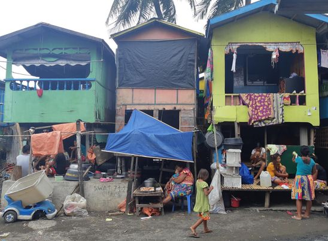
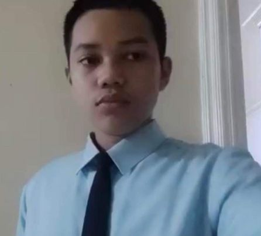
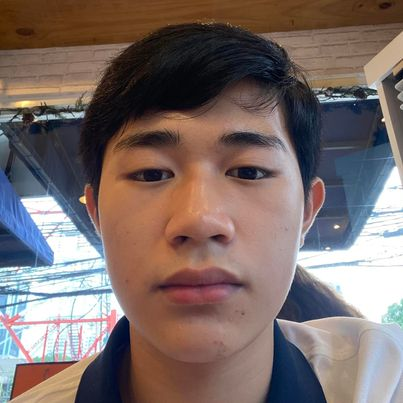

Institution
SIP
Background
MAPEH
Introduction

Badjao are known as “Sea Gypsies” or ``Sea Nomads”. They are an ethnic
group found along the shores of Mindanao, Borneo, Celebes and Indonesia
A majority of the Badjaos practice Islam. They are recognized for their
artistically-woven, colorful sails. The Badjaos lived in stilt-houses along the
coastlines. Originally they live off the sea by trading and fishing.
The association was established with the purpose of becoming a model
among the populace of the badjao community. The association started with
roughly 35 families. Now there are more than 500 members of the
community. The Badjao of Matina Aplaya has more than 700 individuals
from 174 families. An estimate of 99 students are enrolled in Matina
Aplaya Elementary Schooling.
About The Issue
As said on the Badjao Community, because of the lockdown amoang mga
miyembro nawala ang negosyo ug capital. gi baligya ilahang negosyo ug
gipalit nalang pagkaon. Medicine such as paracetamol, pampurga, pang
bandage para sa samad ug first aid kit. Ang amoang mga istudyante
kinhanglan pud unta gadgets sama sa laptop kay magsugiod ang klase.
More of the problem in the Badjao Community is that after the high
tide in their place the garbage will spread everywhere in their place
making an unpleasant scenery. Lastly is that the badjao community's
finances are 50/50 since they can maintain their financial status
as they have such things as sari sari stores and more.


About The Web Designer

His name is Yuan Gabrielle T. Pertubal. His favorite
things to do in life are exercise, biking, playing online
games, playing instruments and many more. He loves
to help his group mates and friends in answering
questions and problems. He may suck at math but can
try his best to help.

Jamil is a mild, easygoing and wide awake kind of guy,
He loves being in loud places, traveling and having fun
but Jamil also loves quiet places, he loves being
relaxed, to be precise he actually loves quiet places
more than loud places because Jamil is a lazy guy and
gets easily tired interacting with people. He loves
helping his groupmates answer with the tasks
especially when the task involves recording.